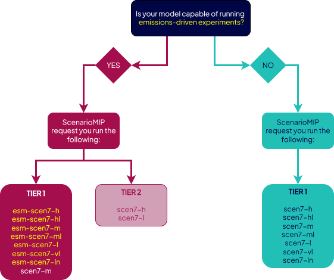

CMIP7 Experiment Setup and Forcings Guidance¶
Documentation under review
The contents of these pages are currently under review. On each experiment page, you will see a dot point for "MIP co-chair review". Where this says "Complete", you can assume that the guidance is stable and reliable. Otherwise, please treat the guidance with some caution, because it has not been reviewed by the experiment designers (the MIP co-chairs) yet. If you have any feedback, please feel free to raise an issue at https://github.com/WCRP-CMIP/cmip7-guidance/issues/new and tag @znichollscr.
These pages provide guidance on the experimental setup and forcings to be used in CMIP7. They are updated regularly, hence should be considered the current source of guidance. The papers which describe the experiments in the scientific literature are the original source and key reference, but they may still contain errors which cannot be fixed after publication so should not be relied upon in isolation. The papers also provide further information about each simulation than what is provided here, such as the motivation, history and results from previous CMIP phases.
These pages specify the intended way to run each simulation. However, we understand that modelling groups sometimes need to make changes for a variety of reasons. We are currently discussing a mechanism for modeling centers to document these alterations in a central, publicly accessible location (for example, discussion of how to choose values for the forcing 'f' identifier is ongoing). When these discussions are finalised, these guidance pages will be updated.
DECK experiments¶
CMIP¶
CMIP core common experiments i.e. the DECK (Diagnostic, Evaluation and Characterization of Klima).
These pages are intended to help with implementation of these experiments. If you notice something that is unclear, please raise an issue. For the full background of the experiments, please see the following URLs:
- Dunne, J. P., Hewitt, H. T., Arblaster, J. M., Bonou, F., Boucher, O., Cavazos, T., Dingley, B., Durack, P. J., Hassler, B., Juckes, M., Miyakawa, T., Mizielinski, M., Naik, V., Nicholls, Z., O'Rourke, E., Pincus, R., Sanderson, B. M., Simpson, I. R., & Taylor, K. E. (2025). An evolving Coupled Model Intercomparison Project phase 7 (CMIP7) and Fast Track in support of future climate assessment. Geoscientific Model Development, 18(19), 6671-6700. https://doi.org/10.5194/gmd-18-6671-2025
The following experiments are included in CMIP:
- 1pctCO2
- abrupt-4xCO2
- amip
- historical
- esm-hist
- piClim-4xCO2
- piClim-anthro
- piClim-control
- piControl
- esm-piControl
- piControl-spinup
- esm-piControl-spinup
Assessment Fast Track (AFT) experiments¶
AerChemMIP¶
Aerosols and chemistry model intercomparison project: exploration of aerosol chemistry.
These pages are intended to help with implementation of these experiments. If you notice something that is unclear, please raise an issue. For the full background of the experiments, please see the following URLs:
- Collins, W. J., Lamarque, J.-F., Schulz, M., Boucher, O., Eyring, V., Hegglin, M. I., Maycock, A., Myhre, G., Prather, M., Shindell, D., & Smith, S. J. (2017). AerChemMIP: quantifying the effects of chemistry and aerosols in CMIP6. Geoscientific Model Development, 10(2), 585-607. https://doi.org/10.5194/gmd-10-585-2017
The following experiments are included in AerChemMIP:
- hist-piAer
- hist-piAQ
- piClim-CH4
- piClim-N2O
- piClim-NOx
- piClim-ODS
- piClim-SO2
- scen7-h-Aer
- esm-scen7-h-Aer
- scen7-h-AQ
- esm-scen7-h-AQ
- scen7-vl-Aer
- esm-scen7-vl-Aer
- scen7-vl-AQ
- esm-scen7-vl-AQ
CFMIP¶
Cloud feedback model intercomparison project. Focussed primarily on cloud feedbacks with a secondary focus on understanding of response to forcing, model biases, circulation, regional-scale precipitation, and non-linear changes.
These pages are intended to help with implementation of these experiments. If you notice something that is unclear, please raise an issue. For the full background of the experiments, please see the following URLs:
- Ceppi, P., Bodas-Salcedo, A., Zelinka, M. D., Andrews, T., Brient, F., Chadwick, R., Dai, A.-Z., Gregory, J. M., Hwang, Y.-T., Kang, S. M., Kay, J. E., Mauritsen, T., Ogura, T., Tselioudis, G., Watanabe, M., Webb, M. J., & Wing, A. A. (2026). The Cloud Feedback Model Intercomparison Project (CFMIP) contribution to CMIP7. Geoscientific Model Development, 19(18), 8693-8708. https://doi.org/10.5194/gmd-19-8693-2026
- Ogura, T., Webb, M. J., & Lock, A. P. (2023). Positive Low Cloud Feedback Primarily Caused by Increasing Longwave Radiation From the Sea Surface in Two Versions of a Climate Model. Geophysical Research Letters, 50(20). Portico. https://doi.org/10.1029/2023gl104786
The following experiments are included in CFMIP:
C4MIP¶
Coupled climate carbon cycle model intercomparison project: exploration of the response of the coupled carbon-climate system.
These pages are intended to help with implementation of these experiments. If you notice something that is unclear, please raise an issue. For the full background of the experiments, please see the following URLs:
- Sanderson, B. M., Booth, B. B. B., Dunne, J., Eyring, V., Fisher, R. A., Friedlingstein, P., Gidden, M. J., Hajima, T., Jones, C. D., Jones, C. G., King, A., Koven, C. D., Lawrence, D. M., Lowe, J., Mengis, N., Peters, G. P., Rogelj, J., Smith, C., Snyder, A. C., et al. (2024). The need for carbon-emissions-driven climate projections in CMIP7. Geoscientific Model Development, 17(22), 8141-8172. https://doi.org/10.5194/gmd-17-8141-2024
- Sanderson, B. M., Brovkin, V., Fisher, R. A., Hohn, D., Ilyina, T., Jones, C. D., Koenigk, T., Koven, C., Li, H., Lawrence, D. M., Lawrence, P., Liddicoat, S., MacDougall, A. H., Mengis, N., Nicholls, Z., O'Rourke, E., Romanou, A., Sandstad, M., Schwinger, J., et al. (2025). flat10MIP: an emissions-driven experiment to diagnose the climate response to positive, zero and negative CO 2 emissions. Geoscientific Model Development, 18(17), 5699-5724. https://doi.org/10.5194/gmd-18-5699-2025
- Jones, C. D., Arora, V., Friedlingstein, P., Bopp, L., Brovkin, V., Dunne, J., Graven, H., Hoffman, F., Ilyina, T., John, J. G., Jung, M., Kawamiya, M., Koven, C., Pongratz, J., Raddatz, T., Randerson, J. T., & Zaehle, S. (2016). C4MIP - The Coupled Climate-Carbon Cycle Model Intercomparison Project: experimental protocol for CMIP6. Geoscientific Model Development, 9(8), 2853-2880. https://doi.org/10.5194/gmd-9-2853-2016
The following experiments are included in C4MIP:
ScenarioMIP¶
Future scenario experiments. Exploration of the future climate under a (selected) range of possible boundary conditions.
The priority of ScenarioMIP experiments (expressed as Tier 1 and 2) is summarized in the flowchart below, which is based
on Table 1 of Van Vuuren et al. 2026.
Emissions-driven experiments, indicated in yellow, have names beginning with esm-.
- If your model is capable of running in emissions-driven mode, ScenarioMIP request emissions-driven scenarios, and
additionally the concentration-driven experiment
scen7-m, at Tier-1 (highest priority). - If your model will run only the concentration-driven experiments, ScenarioMIP request all concentration-driven scenarios at Tier-1.
If you are running in emissions-driven mode, you are welcome to run other scenarios in concentration-driven mode, but they have not been assigned a specific tier (i.e., are lowest priority).

These pages are intended to help with implementation of these experiments. If you notice something that is unclear, please raise an issue. For the full background of the experiments, please see the following URLs:
- van Vuuren, D., O'Neill, B., Tebaldi, C., Chini, L., Friedlingstein, P., Hasegawa, T., Riahi, K., Sanderson, B., Govindasamy, B., Bauer, N., Eyring, V., Fall, C., Frieler, K., Gidden, M., Gohar, L., Jones, A., King, A., Knutti, R., Kriegler, E., et al. (2025). The Scenario Model Intercomparison Project for CMIP7 (ScenarioMIP-CMIP7). https://doi.org/10.5194/egusphere-2024-3765
The following experiments are included in ScenarioMIP:
- scen7-h
- esm-scen7-h
- scen7-h-ext
- esm-scen7-h-ext
- scen7-hl
- esm-scen7-hl
- scen7-hl-ext
- esm-scen7-hl-ext
- scen7-l
- esm-scen7-l
- scen7-l-ext
- esm-scen7-l-ext
- scen7-ln
- esm-scen7-ln
- scen7-ln-ext
- esm-scen7-ln-ext
- scen7-m
- esm-scen7-m
- scen7-m-ext
- esm-scen7-m-ext
- scen7-ml
- esm-scen7-ml
- scen7-ml-ext
- esm-scen7-ml-ext
- scen7-vl
- esm-scen7-vl
- scen7-vl-ext
- esm-scen7-vl-ext
DCPP¶
Decadal climate prediction project: Coordinated multi-model investigation into decadal climate prediction, predictability, and variability
These pages are intended to help with implementation of these experiments. If you notice something that is unclear, please raise an issue. For the full background of the experiments, please see the following URLs:
- Boer, G. J., Smith, D. M., Cassou, C., Doblas-Reyes, F., Danabasoglu, G., Kirtman, B., Kushnir, Y., Kimoto, M., Meehl, G. A., Msadek, R., Mueller, W. A., Taylor, K. E., Zwiers, F., Rixen, M., Ruprich-Robert, Y., & Eade, R. (2016). The Decadal Climate Prediction Project (DCPP) contribution to CMIP6. Geoscientific Model Development, 9(10), 3751-3777. https://doi.org/10.5194/gmd-9-3751-2016
The following experiments are included in DCPP:
DAMIP¶
Detection and attribution model intercomparison project: exploration of the role of individual forcings (both anthropogenic and natural) in past and future climate change.
These pages are intended to help with implementation of these experiments. If you notice something that is unclear, please raise an issue. For the full background of the experiments, please see the following URLs:
- Gillett, N. P., Simpson, I. R., Hegerl, G., Knutti, R., Mitchell, D., Ribes, A., Shiogama, H., Stone, D., Tebaldi, C., Wolski, P., Zhang, W., & Arora, V. K. (2025). The Detection and Attribution Model Intercomparison Project (DAMIP v2.0) contribution to CMIP7. Geoscientific Model Development, 18(14), 4399-4416. https://doi.org/10.5194/gmd-18-4399-2025
The following experiments are included in DAMIP:
GeoMIP¶
Geoengineering model intercomparison project: exploration of the climate response to solar radiation manipulation.
These pages are intended to help with implementation of these experiments. If you notice something that is unclear, please raise an issue. For the full background of the experiments, please see the following URLs:
- Visioni, D., Robock, A., Haywood, J., Henry, M., Tilmes, S., MacMartin, D. G., Kravitz, B., Doherty, S. J., Moore, J., Lennard, C., Watanabe, S., Muri, H., Niemeier, U., Boucher, O., Syed, A., Egbebiyi, T. S., Séférian, R., & Quaglia, I. (2024). G6-1.5K-SAI: a new Geoengineering Model Intercomparison Project (GeoMIP) experiment integrating recent advances in solar radiation modification studies. Geoscientific Model Development, 17(7), 2583-2596. https://doi.org/10.5194/gmd-17-2583-2024
- Visioni, D., Robock, A., Roberts, K. E., Lee, W., Henry, M., Duffey, A., Hirasawa, H., Chegwidden, O., & Sipra, H. (2025). Finalizing Experimental Protocols for the Geoengineering Model Intercomparison Project (GeoMIP) Contribution to CMIP7. Bulletin of the American Meteorological Society, 106(10), E2029-E2035. https://doi.org/10.1175/bams-d-25-0191.1
The following experiments are included in GeoMIP:
LMIP¶
Land (offline) Model Intercomparison Project: advancing understanding of the impacts of land-use and land-cover change (LULCC) on climate
These pages are intended to help with implementation of these experiments. If you notice something that is unclear, please raise an issue. For the full background of the experiments, please see the following URLs:
- van den Hurk, B., Kim, H., Krinner, G., Seneviratne, S. I., Derksen, C., Oki, T., Douville, H., Colin, J., Ducharne, A., Cheruy, F., Viovy, N., Puma, M. J., Wada, Y., Li, W., Jia, B., Alessandri, A., Lawrence, D. M., Weedon, G. P., Ellis, R., et al. (2016). LS3MIP (v1.0) contribution to CMIP6: the Land Surface, Snow and Soil moisture Model Intercomparison Project - aims, setup and expected outcome. Geoscientific Model Development, 9(8), 2809-2832. https://doi.org/10.5194/gmd-9-2809-2016
The following experiments are included in LMIP:
PMIP¶
Palaeoclimate modelling intercomparison project: assessment of paleoclimate i.e. climate thousands of years or more in the past.
These pages are intended to help with implementation of these experiments. If you notice something that is unclear, please raise an issue. For the full background of the experiments, please see the following URLs:
- Otto-Bliesner, B. L., Braconnot, P., Harrison, S. P., Lunt, D. J., Abe-Ouchi, A., Albani, S., Bartlein, P. J., Capron, E., Carlson, A. E., Dutton, A., Fischer, H., Goelzer, H., Govin, A., Haywood, A., Joos, F., LeGrande, A. N., Lipscomb, W. H., Lohmann, G., Mahowald, N., et al. (2017). The PMIP4 contribution to CMIP6 - Part 2: Two interglacials, scientific objective and experimental design for Holocene and Last Interglacial simulations. Geoscientific Model Development, 10(11), 3979-4003. https://doi.org/10.5194/gmd-10-3979-2017
- Sime, L. C., Sivankutty, R., Vallet-Malmierca, I., de Boer, A. M., & Sicard, M. (2023). Summer surface air temperature proxies point to near-sea-ice-free conditions in the Arctic at 127 ka. Climate of the Past, 19(4), 883-900. https://doi.org/10.5194/cp-19-883-2023
The following experiments are included in PMIP:
RFMIP¶
Radiative Forcing Model Intercomparison Project: characterisation of radiative forcing within models.
These pages are intended to help with implementation of these experiments. If you notice something that is unclear, please raise an issue. For the full background of the experiments, please see the following URLs:
- Pincus, R., Forster, P. M., & Stevens, B. (2016). The Radiative Forcing Model Intercomparison Project (RFMIP): experimental protocol for CMIP6. Geoscientific Model Development, 9(9), 3447-3460. https://doi.org/10.5194/gmd-9-3447-2016
- Smith, C. J., Kramer, R. J., Myhre, G., Alterskjær, K., Collins, W., Sima, A., Boucher, O., Dufresne, J.-L., Nabat, P., Michou, M., Yukimoto, S., Cole, J., Paynter, D., Shiogama, H., O'Connor, F. M., Robertson, E., Wiltshire, A., Andrews, T., Hannay, C., et al. (2020). Effective radiative forcing and adjustments in CMIP6 models. Atmospheric Chemistry and Physics, 20(16), 9591-9618. https://doi.org/10.5194/acp-20-9591-2020
- Kramer, R. J., Smith, C., & Andrews, T. (2026). The Radiative Forcing Model Intercomparison Project (RFMIP2.0) for CMIP7. Geoscientific Model Development, 19(10), 4447-4466. https://doi.org/10.5194/gmd-19-4447-2026
The following experiments are included in RFMIP:
Other experiments¶
PolMIP¶
Policy-Aligned Model Intercomparison Project (PolMIP). PolMIP is designed as a complementary effort to existing MIPs. While ScenarioMIP explores the breadth of future forcing levels under idealized assumptions, PolMIP focuses on the depth of policy-driven pathways, offering higher fidelity for regions where specific mitigation strategies and timelines are defined. By providing a coordinated infrastructure for policy-driven scenario simulations, PolMIP aims to deliver actionable science for national climate assessments, enhance the policy relevance of CMIP, and foster closer collaboration between the climate modeling community and policymakers. Ultimately, PolMIP seeks to ensure that the next generation of climate projections is not only scientifically robust but also deeply rooted in the real-world decisions shaping our collective future. The project has completed phase 1: demonstration and proof of concept, starting from the SSP2-com scenario that was developed by Chinese scientists that aligns with China's carbon neutrality pledge (peaking carbon emissions before 2030 and achieving carbon neutrality before 2060) within the SSP2 socioeconomic framework and the NDC data of countries worldwide. The next phase will expand the framework to include policy-aligned scenarios from other nations and regions, creating a multi-country ensemble that enables consistent cross-comparison of national climate action strategies under a unified protocol.
These pages are intended to help with implementation of these experiments. If you notice something that is unclear, please raise an issue. For the full background of the experiments, please see the following URLs:
- Zhong, J., Zhang, X., Zhang, D., Wang, D., Guo, L., Peng, H., Huang, X., Wang, Z., Lei, Y., Lu, Y., Qu, C., Zhang, X., & Miao, C. (2025). Plausible global emissions scenario for 2 °C aligned with China's net-zero pathway. Nature Communications, 16(1). https://doi.org/10.1038/s41467-025-62983-5
- Zhang, X., Zhong, J., Zhang, X., Zhang, D., Miao, C., Wang, D., & Guo, L. (2025). China Can Achieve Carbon Neutrality in Line with the Paris Agreement's 2 °C Target: Navigating Global Emissions Scenarios, Warming Levels, and Extreme Event Projections. Engineering, 44, 207-214. https://doi.org/10.1016/j.eng.2024.11.023
- Zhang, D., Huang, X.-D., Zhong, J.-T., Guo, L.-F., Guo, S.-Y., Wang, D.-Y., Miao, C.-H., Zhang, X.-L., & Zhang, X.-Y. (2023). A representative CO2 emissions pathway for China toward carbon neutrality under the Paris Agreement's 2 °C target. Advances in Climate Change Research, 14(6), 941-951. https://doi.org/10.1016/j.accre.2023.11.004
- Lu, Y., Jin, L., Zhong, J., Zhang, X., Zhang, Y., Wu, F., Zhang, F., Wang, Z., Zhang, J., Xin, X., Wu, T., Wang, D., Zhang, D., Wang, T., & Hua, W. (2025). Earth system responses under a global 2 °C-target scenario aligned with China's carbon neutrality pledge. Environmental Research Letters, 20(10), 104049. https://doi.org/10.1088/1748-9326/adfbfb
- Högner, A., Sandstad, M., Kikstra, J., Nauels, A., Nicholls, Z., Sanderson, B., Smith, C., Zecchetto, M., & Schleussner, C.-F. (2026). The CMIP7 VL-CF counterfactual emissions pathway dataset v1.1.1 documentation [Dataset]. Zenodo. https://doi.org/10.5281/ZENODO.21487424
The following experiments are included in PolMIP: